Inappropriate image manipulations
Here is an overview of the major categories of inappropriate image manipulations.
- Image duplication
- Combining parts of images
- Removing parts of images
- Modifying different parts of an image in different ways
INAPPROPRIATE: Image duplication
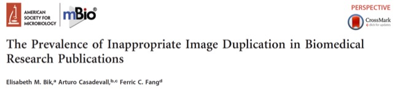
A 2016 study* by Bik et al. (Bik et al. “The prevalence of inappropriate image duplication in biomedical research publications” mBio, volume 7(3), 2016. DOI:10.1128/mBio.00809-16):
*This paper is accessible online via the university library electronic journals service.
- Examined 20,621 images published
- Across 40 different scientific journals
“A total of 20,621 research papers containing the search term “Western blot” from 40 different journals and 14 publishers were examined for inappropriate duplications of photographic images, with or without repositioning or evidence of alteration”
Only looked for one type of image manipulation:
- 3.8% of papers contained image duplication
- At least half were likely to be deliberate manipulation
“Among the 782 problematic papers found in this study, 230 (29.4%) contained simple duplications and 356 (45.5%) contained duplicated images with repositioning, while the remaining 196 (25.1%) contained duplicated figures with alteration.”
Example: Image duplication of a Western blot
Int his example we see that the loading control has been duplicated - it can't really have come from both experiments A and B!
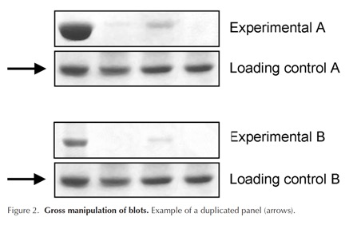
Rossner and Yamada “What’s in a picture? The temptation of image manipulation” Journal of Cell Biology, volume 166(1), 2004. DOI: 10.1083/jcb.200406019. Reproduced here with permission from Rockefeller University Press.
Example: Woo Suk Hwang controversy
Woo Suk Hwang, biomedical researcher found responsible for multiple ethical breaches, including image integrity.
Woo Suk Hwang, et al. “Patient-specific embryonic stem cells derived from human SCNT blastocysts” Science, volume 308 pp.1777, 2005. DOI: 10.1126/science.1112286.
Image: Supplementary Figure S1 (b & c). Reproduced here with permission from The American Association for the Advancement of Science.
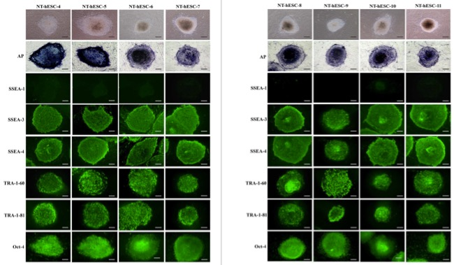
In this figure, each column is meant to represent a different set of cells, under experimental conditions. But if we look a little close...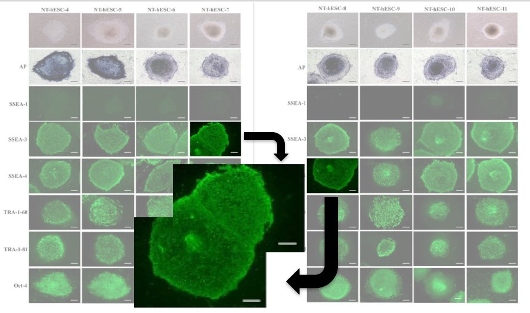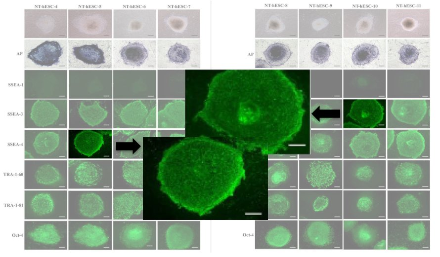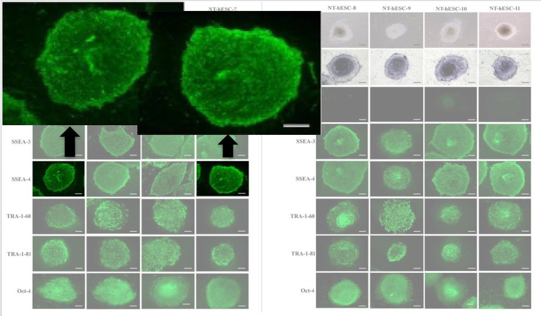... we see that these are not different cells at all!
INAPPROPRIATE: Splicing images together
Example: Splicing images to inappropriately add cells
Here multiple images have been spliced together to make it appear as though they were originally a single image. The image manipulation is revealed by a simple contrast adjustment.
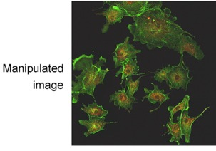 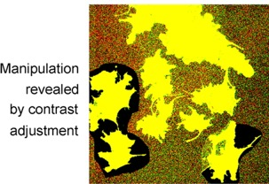
Rossner and Yamada “What’s in a picture? The temptation of image manipulation” Journal of Cell Biology, volume 166(1), 2004. DOI: 10.1083/jcb.200406019. Reproduced here with permission from Rockefeller University Press.
Example: Dipak K. Das controversy
Dipak K Das: 145 counts of data fabrication or falsification
This image is not from one of Dr Das' papers, but was adapted from Wikimedia Commons content. The image diagrams below mimic the ones prepared by Dipak Das' investigating committee as an explanation of the types of image manipulation techniques found. Source: https://ctmirror.org/2012/01/11/uconn-health-center-says-professor-falsified-data/
Splicing parts of a Western blot image:
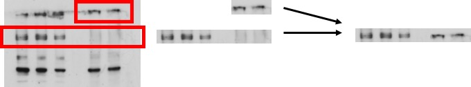
Pasting bands of Western blots:
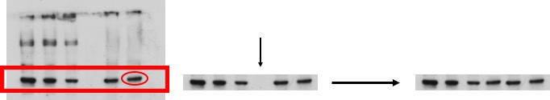
Images reproduced (adapted) from this image by Masur (Own work) [CC0], via Wikimedia Commons.
INAPPROPRIATE: Removing parts of an image {removing-parts}
Example: ACS Nano paper
The image may look ok at first glance:
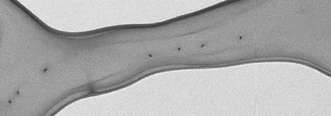
But, looking closer, we see two regions that appear to have been inappropriately altered:
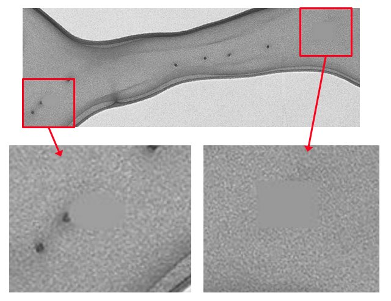
Reprinted (adapted) with permission from Anumolu et al. 'Fabrication of Highly Uniform Nanoparticles from Recombinant Silk-Elastin-like Protein Polymers for Therapeutic Agent Delivery' ACS Nano, 2011, 5(7), pp 5374-5382 (DOI: 10.1021/nn103585f). Copyright 2011 American Chemical Society.
This instance of image manipulation was reported in a Chemistry Blog article by user 'Mitch' ‘Alleged Data Manipulation in Nano Letters and ACS Nano from the Pease group’, 13th August 2013.
Example: Removing cells inappropriately
Here we see an image of some cells. A simple contrast adjustment reveals some cells have been removed inappropriately from the bottom right:
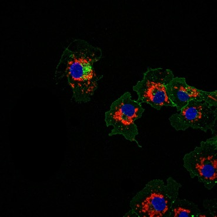 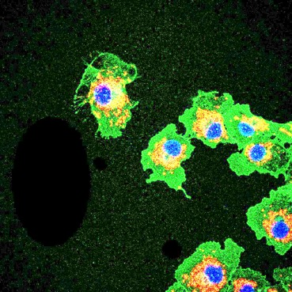
Images reproduced here with the permission of the owner, Dr. Sarah Creed. These images have been altered deliberately for this training guide.
INAPPROPRIATE: Modifying different parts of an image in different ways
Example: Misrepresentation of immunogold data
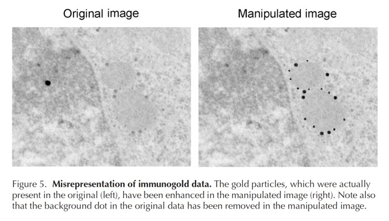
Rossner and Yamada “What’s in a picture? The temptation of image manipulation” Journal of Cell Biology, volume 166(1), 2004. DOI: 10.1083/jcb.200406019. Reproduced here with permission from Rockefeller University Press.